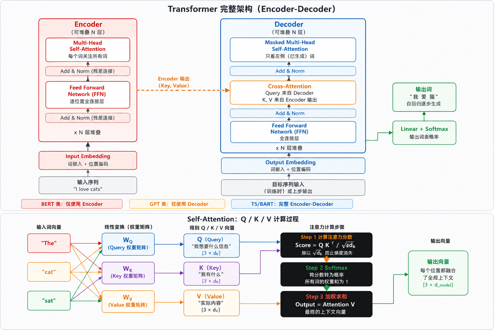

Hugging Face Transformers
Hugging Face Transformers es actualmente la biblioteca de código abierto de NLP / IA más popular, que ofrece miles de modelos preentrenados y cubre casi todas las tareas de IA como texto, imagen, audio y multimodal.
Su valor principal: encapsula los complejos procesos de carga de modelos, inferencia y entrenamiento en unas pocas líneas de código.
Tipos de tareas compatibles
Principios centrales de la arquitectura Transformer
Antes de usar la biblioteca, comprender la arquitectura subyacente te permitirá saber por qué ajustar los parámetros de esta manera.
Arquitectura general: Encoder-Decoder

Tres grandes familias de modelos
Instalación y configuración del entorno
Instalación
# 基础安装 pip install transformers # 完整安装（包含训练依赖） pip install transformers[torch] # PyTorch 后端（推荐） pip install transformers[tf-cpu] # TensorFlow 后端 pip install transformers[flax] # JAX/Flax 后端 # 常用配套库 pip install datasets # HuggingFace 数据集库 pip install evaluate # 模型评估指标 pip install accelerate # 多GPU/混合精度训练 pip install peft # 参数高效微调（LoRA等） pip install tokenizers # 高性能分词器 pip install sentencepiece # 部分模型（T5/LLaMA）需要 # 验证安装 python -c "import transformers; print(transformers.__version__)"
Configuración de variables de entorno
# 设置模型缓存目录（模型下载后缓存到此路径，默认 ~/.cache/huggingface） export HF_HOME=/data/huggingface_cache # 国内用户：使用镜像站加速下载（推荐 hf-mirror.com） export HF_ENDPOINT=https://hf-mirror.com # 离线模式（网络不可用时，只使用已缓存的模型） export TRANSFORMERS_OFFLINE=1 # 禁用进度条（CI/CD 环境） export DISABLE_TQDM=1
Ejemplo
import os
os.environ["HF_ENDPOINT"] = "https://hf-mirror.com"
# Ver el directorio de caché actual
from transformers.utils import TRANSFORMERS_CACHE
print(TRANSFORMERS_CACHE)
Pipeline: corre IA con cinco líneas de código
Pipeline es la abstracción de más alto nivel de Transformers; encapsula la carga del modelo, el preprocesamiento, la inferencia y el postprocesamiento, y permite completar la inferencia con tres a cinco líneas de código.
Guía completa de ejemplos rápidos de Pipeline
Ejemplo
# 1. Análisis de sentimientos (clasificación de texto)
classifier = pipeline("sentiment-analysis")
result = classifier("I love using Hugging Face Transformers!")
# -> [{'label': 'POSITIVE', 'score': 0.9998}]
# 2. Generación de texto
generator = pipeline("text-generation", model="gpt2")
result = generator("Once upon a time in a land far away,",
max_new_tokens=50, num_return_sequences=1, temperature=0.8)
# 3. Completar espacios (modelo de lenguaje enmascarado)
unmasker = pipeline("fill-mask", model="bert-base-uncased")
result = unmasker("The capital of France is [MASK].")
# -> [{'token_str': 'paris', 'score': 0.9823}, ...]
# 4. Reconocimiento de entidades nombradas (NER)
ner = pipeline("ner", aggregation_strategy="simple")
result = ner("My name is John and I work at Google in New York.")
# -> [{'entity_group': 'PER', 'word': 'John', 'score': 0.998}, ...]
# 5. Preguntas y respuestas extractivas
qa = pipeline("question-answering")
result = qa(question="Who invented Python?",
context="Python was created by Guido van Rossum in 1991.")
# -> {'answer': 'Guido van Rossum', 'score': 0.9887}
# 6. Resumen de texto
summarizer = pipeline("summarization", model="facebook/bart-large-cnn")
result = summarizer(article, max_length=60, min_length=20)
# 7. Traducción automática
translator = pipeline("translation", model="Helsinki-NLP/opus-mt-en-zh")
result = translator("Hello, how are you today?")
# -> [{'translation_text': 'Hola, ¿cómo estás hoy?'}]
# 8. Clasificación de cero disparos (no requiere entrenamiento específico)
zero_shot = pipeline("zero-shot-classification")
result = zero_shot("I love playing football",
candidate_labels=["sports", "politics", "technology"])
# -> {'labels': ['sports', ...], 'scores': [0.972, ...]}
Configuración avanzada de Pipeline
Ejemplo
from transformers import pipeline
# Especificar GPU
pipe = pipeline("text-generation", model="gpt2", device=0)
# Especificar precisión (ahorra memoria de video)
pipe = pipeline("text-generation", model="meta-llama/Llama-2-7b-hf",
torch_dtype=torch.float16, device_map="auto")
# Procesamiento por lotes (aumenta el rendimiento)
pipe = pipeline("sentiment-analysis", batch_size=32)
results = pipe(large_text_list) # Inferencia por lotes automática
# Procesamiento de textos largos por bloques
asr = pipeline("automatic-speech-recognition",
model="openai/whisper-large-v2",
chunk_length_s=30, stride_length_s=5)
result = asr("long_audio.wav", return_timestamps=True)
Análisis profundo del Tokenizer
El Tokenizer es el primer paso en NLP: convierte el texto original en secuencias numéricas que el modelo puede entender.
Proceso completo de Tokenization
Uso principal del Tokenizer
Ejemplo
# Cargar Tokenizer
tokenizer = AutoTokenizer.from_pretrained("bert-base-uncased")
# Codificación en un solo paso
encoding = tokenizer(
"Hello, I'm learning Transformers!",
return_tensors="pt", # Devuelve tensor de PyTorch
padding=True, # Rellenar hasta la secuencia más larga
truncation=True, # Truncar cuando excede la longitud
max_length=128, # Longitud máxima
)
print(encoding.keys())
# -> dict_keys(['input_ids', 'token_type_ids', 'attention_mask'])
print(encoding["input_ids"][0][:8])
# -> tensor([101, 7592, 1010, 1045, 1005, 1049, 4083, 19081])
print(encoding["attention_mask"][0][:8])
# -> tensor([1, 1, 1, 1, 1, 1, 1, 1]) # 1=token real, 0=relleno
# Decodificación (ID -> texto)
decoded = tokenizer.decode(encoding["input_ids"][0], skip_special_tokens=True)
print(decoded) # -> "hello, i'm learning transformers!"
# Codificación por lotes (alineación automática con padding)
texts = ["Short.", "This is a much longer sentence for testing."]
batch = tokenizer(texts, padding=True, truncation=True, return_tensors="pt")
print(batch["input_ids"].shape) # -> torch.Size([2, 10])
# Información del vocabulario
print(f"Tamaño del vocabulario: {tokenizer.vocab_size}") # -> 30522
print(f"[CLS] ID: {tokenizer.cls_token_id}") # -> 101
print(f"[SEP] ID: {tokenizer.sep_token_id}") # -> 102
print(f"Longitud máxima: {tokenizer.model_max_length}") # -> 512
Comparación de tipos de Tokenizer comunes
Carga de modelos e inferencia
AutoClass: selecciona automáticamente la clase de modelo correcta
Ejemplo
from transformers import AutoTokenizer, AutoModelForSequenceClassification
model_name = "bert-base-uncased"
tokenizer = AutoTokenizer.from_pretrained(model_name)
model = AutoModelForSequenceClassification.from_pretrained(
model_name, num_labels=2, torch_dtype=torch.float16, device_map="auto"
)
# Flujo completo de inferencia manual
text = "Transformers is an amazing library!"
# 1. Codificación
inputs = tokenizer(text, return_tensors="pt", truncation=True, max_length=512)
inputs = {k: v.to(model.device) for k, v in inputs.items()}
# 2. Propagación hacia adelante
with torch.no_grad():
outputs = model(**inputs)
# 3. Analizar la salida
logits = outputs.logits # shape: [1, 2]
probs = torch.softmax(logits, dim=-1)
pred = torch.argmax(probs, dim=-1).item()
id2label = model.config.id2label # {0: 'LABEL_0', 1: 'LABEL_1'}
print(f"Clase predicha: {id2label[pred]}, confianza: {probs)
Extracción de vectores de oraciones
Ejemplo
import torch
model = AutoModel.from_pretrained("bert-base-uncased")
tokenizer = AutoTokenizer.from_pretrained("bert-base-uncased")
def get_sentence_embedding(text: str) -> torch.Tensor:
inputs = tokenizer(text, return_tensors="pt", max_length=512, truncation=True)
with torch.no_grad():
outputs = model(**inputs)
# Aplicar mean pooling a todos los tokens
token_embeddings = outputs.last_hidden_state # [1, seq_len, 768]
attention_mask = inputs["attention_mask"].unsqueeze(-1)
mean_embedding = (token_embeddings * attention_mask).sum(1) / attention_mask.sum(1)
return mean_embedding # [1, 768]
vec = get_sentence_embedding("Hello world")
print(vec.shape) # -> torch.Size([1, 768])
Práctica de diez tareas comunes
Clasificación de texto (análisis de sentimientos)
Ejemplo
import torch
model_name = "cardiffnlp/twitter-roberta-base-sentiment-latest"
tokenizer = AutoTokenizer.from_pretrained(model_name)
model = AutoModelForSequenceClassification.from_pretrained(model_name)
def predict_sentiment(texts):
inputs = tokenizer(texts, return_tensors="pt", padding=True,
truncation=True, max_length=512)
with torch.no_grad():
logits = model(**inputs).logits
probs = torch.softmax(logits, dim=-1)
results = []
for i, t in enumerate(texts):
pid = probs[i].argmax().item()
results.append({"text": t, "label": model.config.id2label[pid],
"score": round(probs[i][pid].item(), 4)})
return results
print(predict_sentiment(["I love this!", "This is terrible."]))
# -> [{'text': 'I love this!', 'label': 'positive', 'score': 0.9756}, ...]
Generación de texto (diálogo / continuación)
Ejemplo
import torch
model_name = "Qwen/Qwen2-1.5B-Instruct" # Alibaba Tongyi Qianwen (compatible con chino)
tokenizer = AutoTokenizer.from_pretrained(model_name)
model = AutoModelForCausalLM.from_pretrained(
model_name, torch_dtype=torch.float16, device_map="auto"
)
messages = [
{"role": "system", "content": "Eres un asistente de IA útil."},
{"role": "user", "content": "Explica qué es Transformer en tres frases."},
]
text = tokenizer.apply_chat_template(messages, tokenize=False,
add_generation_prompt=True)
inputs = tokenizer(text, return_tensors="pt").to(model.device)
with torch.no_grad():
output_ids = model.generate(
**inputs, max_new_tokens=300, temperature=0.7, top_p=0.9,
do_sample=True, repetition_penalty=1.1,
pad_token_id=tokenizer.eos_token_id,
)
new_tokens = output_ids[0][inputs["input_ids"].shape[1]:]
response = tokenizer.decode(new_tokens, skip_special_tokens=True)
print(response)
Reconocimiento de entidades nombradas (NER)
Ejemplo
ner = pipeline("ner", model="dslim/bert-base-NER", aggregation_strategy="simple")
result = ner("Elon Musk founded SpaceX in 2002 and Tesla Motors in 2003.")
for entity in result:
print(f"{entity['word']:<20} -> {entity['entity_group']} ({entity['score']:.3f})")
# NER en chino
ner_cn = pipeline("ner", model="hfl/chinese-bert-wwm-ext-ner-msra",
aggregation_strategy="simple")
result = ner_cn("Xiaoming estudió en la Universidad de Pekín y luego fue a trabajar a Alibaba.")
Traducción automática
Ejemplo
# Traducción inglés a chino
translator = pipeline("translation", model="Helsinki-NLP/opus-mt-en-zh")
result = translator("Artificial intelligence is transforming the world.")
print(result[0]["translation_text"]) # -> La inteligencia artificial está cambiando el mundo.
# Traducción chino a inglés
translator_zh = pipeline("translation", model="Helsinki-NLP/opus-mt-zh-en")
result = translator_zh("La inteligencia artificial está cambiando el mundo.")
print(result[0]["translation_text"])
Resumen de texto
Ejemplo
summarizer = pipeline("summarization", model="facebook/bart-large-cnn")
result = summarizer(long_text, max_length=80, min_length=30,
do_sample=False, no_repeat_ngram_size=3)
print(result[0]["summary_text"])
Ajuste fino (Fine-tuning)
El ajuste fino consiste en adaptar un modelo preentrenado a tu tarea y datos específicos. Es el escenario de aplicación más importante de Transformers.
Panorama del proceso de ajuste fino
Ejemplo completo de ajuste fino: clasificación de texto
Ejemplo
from transformers import (
AutoTokenizer, AutoModelForSequenceClassification,
TrainingArguments, Trainer, DataCollatorWithPadding,
EarlyStoppingCallback,
)
import evaluate, numpy as np
# 1. Cargar el conjunto de datos
dataset = load_dataset("imdb") # Conjunto de datos público de HF Hub
# 2. Tokenizer + preprocesamiento
MODEL_NAME = "bert-base-uncased"
tokenizer = AutoTokenizer.from_pretrained(MODEL_NAME)
def tokenize_fn(examples):
return tokenizer(examples["text"], truncation=True, max_length=512)
tokenized_ds = dataset.map(tokenize_fn, batched=True,
remove_columns=["text"])
tokenized_ds = tokenized_ds.rename_column("label", "labels")
tokenized_ds.set_format("torch")
data_collator = DataCollatorWithPadding(tokenizer=tokenizer)
# 3. Cargar modelo
model = AutoModelForSequenceClassification.from_pretrained(
MODEL_NAME, num_labels=2,
id2label={0: "NEGATIVE", 1: "POSITIVE"},
label2id={"NEGATIVE": 0, "POSITIVE": 1},
)
# 4. Métricas de evaluación
accuracy = evaluate.load("accuracy")
f1 = evaluate.load("f1")
def compute_metrics(eval_pred):
logits, labels = eval_pred
preds = np.argmax(logits, axis=-1)
return {"accuracy": accuracy.compute(predictions=preds, references=labels)["accuracy"],
"f1": f1.compute(predictions=preds, references=labels, average="binary")["f1"]}
# 5. Parámetros de entrenamiento
training_args = TrainingArguments(
output_dir="./results", num_train_epochs=3,
per_device_train_batch_size=16, per_device_eval_batch_size=32,
gradient_accumulation_steps=2, learning_rate=2e-5,
weight_decay=0.01, warmup_ratio=0.1,
evaluation_strategy="steps", eval_steps=500,
save_strategy="steps", save_steps=500,
load_best_model_at_end=True, metric_for_best_model="f1",
fp16=True, logging_steps=100, seed=42,
)
# 6. Crear el Trainer y entrenar
trainer = Trainer(
model=model, args=training_args,
train_dataset=tokenized_ds["train"],
eval_dataset=tokenized_ds["test"],
tokenizer=tokenizer, data_collator=data_collator,
compute_metrics=compute_metrics,
callbacks=[EarlyStoppingCallback(early_stopping_patience=3)],
)
trainer.train()
# 7. Evaluar y guardar
eval_result = trainer.evaluate()
print(f"Exactitud: {eval_result['eval_accuracy']:.4f}")
print(f"F1: {eval_result['eval_f1']:.4f}")
trainer.save_model("./my-sentiment-model")
tokenizer.save_pretrained("./my-sentiment-model")
LoRA ajuste fino eficiente en parámetros (recomendado)
Ejemplo
from transformers import AutoModelForCausalLM, AutoTokenizer, TrainingArguments
import torch
model_name = "meta-llama/Llama-2-7b-hf"
model = AutoModelForCausalLM.from_pretrained(
model_name, torch_dtype=torch.float16, device_map="auto",
load_in_4bit=True, # Carga cuantizada de 4 bits (QLoRA), ahorra aún más memoria de video
)
# Configurar LoRA
lora_config = LoraConfig(
task_type=TaskType.CAUSAL_LM, r=16, lora_alpha=32,
lora_dropout=0.05,
target_modules=["q_proj", "v_proj", "k_proj", "o_proj"],
)
model = get_peft_model(model, lora_config)
model.print_trainable_parameters()
# -> trainable: 4,194,304 || all: 6,742,609,920 || 0.0622%
Ventajas de LoRA: entrena menos del 1% de los parámetros, reduce la memoria de video en 60-70%, es 2-3 veces más rápido, los archivos de pesos ocupan solo unos pocos MB, y se pueden guardar múltiples adaptadores LoRA para el mismo modelo base para diferentes tareas.
Guardado, carga y publicación de modelos
Ejemplo
model.save_pretrained("./my-model")
tokenizer.save_pretrained("./my-model")
# Cargar localmente
model = AutoModelForSequenceClassification.from_pretrained("./my-model")
tokenizer = AutoTokenizer.from_pretrained("./my-model")
# Publicar en HuggingFace Hub
from huggingface_hub import login
login(token="your_hf_token") # huggingface.co/settings/tokens
model.push_to_hub("your-username/my-sentiment-model")
tokenizer.push_to_hub("your-username/my-sentiment-model")
# Publicar directamente con Trainer
training_args = TrainingArguments(
output_dir="your-username/my-model",
push_to_hub=True, hub_strategy="every_save",
)
Consejos de optimización del rendimiento
Panorama de aceleración de inferencia
Ejemplo
from transformers import BitsAndBytesConfig, AutoModelForCausalLM
import torch
quant_config = BitsAndBytesConfig(
load_in_4bit=True, bnb_4bit_compute_dtype=torch.float16,
bnb_4bit_use_double_quant=True, bnb_4bit_quant_type="nf4",
)
model = AutoModelForCausalLM.from_pretrained(
"meta-llama/Llama-2-13b-hf",
quantization_config=quant_config, device_map="auto",
)
# Aceleración con FlashAttention-2 (requiere pip install flash-attn)
model = AutoModelForCausalLM.from_pretrained(
"mistralai/Mistral-7B-v0.1",
attn_implementation="flash_attention_2",
torch_dtype=torch.bfloat16, device_map="auto",
)
# torch.compile (PyTorch 2.0+)
model = torch.compile(model, mode="reduce-overhead")
Solución de problemas comunes
Resumen y ruta de aprendizaje
Referencia rápida de API clave
Ejemplo
tokenizer = AutoTokenizer.from_pretrained("model_name")
# 2. Codificar el texto
inputs = tokenizer(text, return_tensors="pt", truncation=True, max_length=512)
# 3. Cargar el modelo
model = AutoModelForSequenceClassification.from_pretrained("model_name", num_labels=N)
# 4. Inferencia
with torch.no_grad():
outputs = model(**inputs)
# 5. Pipeline
pipe = pipeline("task_name", model="model_name")
# 6. Configuración del entrenamiento
args = TrainingArguments(output_dir="./out", num_train_epochs=3, learning_rate=2e-5)
# 7. Entrenamiento
trainer = Trainer(model=model, args=args, train_dataset=ds, compute_metrics=fn)
# 8. Guardar
model.save_pretrained("./my-model")
tokenizer.save_pretrained("./my-model")
# 9. Conjunto de datos
dataset = load_dataset("dataset_name")
dataset = dataset.map(tokenize_fn, batched=True)
# 10. LoRA
config = LoraConfig(r=16, lora_alpha=32, target_modules=["q_proj","v_proj"])
model = get_peft_model(model, config)
Haz clic para compartir notas
<p style="font-size:14px;">¡Las notas deben ser una extensión del contenido de este artículo!</p><br> <p style="font-size:12px;"><a href="../tougao.html" target="_blank">Envío de artículos, haz clic aquí</a></p> <p style="font-size:14px;"><a href="../w3cnote/runoob-user-test-intro.html" target="_blank">Cómo obtener el código de invitación de registro</a></p> <h3 class="text-muted"><i class="fa fa-info-circle" aria-hidden="true"></i> Antes de compartir notas debes <a href=";.html" class="runoob-pop">iniciar sesión</a>.</h3> <p><a href="../w3cnote/runoob-user-test-intro.html" target="_blank">Cómo obtener el código de invitación de registro</a></p>